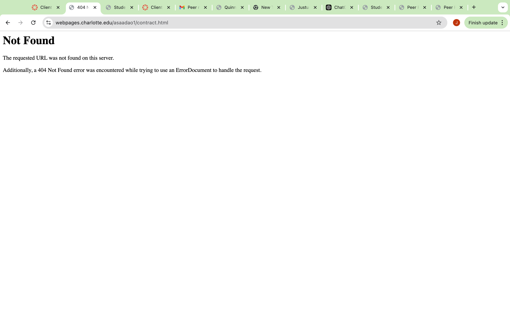

Peer Review: Saadaoui, Amin

Visit Website
- Homepage: The homepage is not functional, as the requested URL displays a 404 Not Found error.
- No spaces or uppercase in file/folder names: Unable to determine due to the lack of accessible content.
- Design:
- Contrast/Sizing: No content is available to evaluate contrast or sizing.
- Colors and fonts using CSS: Unable to assess as the website is not displaying any content.
- CRAP:
- Contrast: Not applicable due to missing content.
- Repetition: Not applicable as no pages are accessible.
- Alignment: Unable to evaluate alignment due to the absence of visible elements.
- Proximity: No elements to evaluate proximity.
- Page Includes:
- Header: No header is present due to the lack of content.
- Main: No main content is visible.
- Footer: Footer cannot be assessed as the page is not available.
- Nav Bar: Navigation is not functional due to the site not loading correctly.
- Page Requirements:
- No functional HTML structure is present on the site.
- The required five pages with content are missing or inaccessible.
- Other Feedback:
- The site currently does not display any content. Ensure all necessary files are uploaded to the server and correctly linked.
- Verify that file paths and URLs are correctly configured to avoid 404 errors.
- Start with a basic layout and content to meet project requirements.